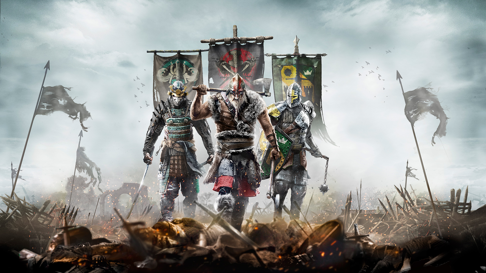

Template
For Honor
Rating: 8
For Honor’s combat is the kind of brutal melee I always wanted, but never thought I’d actually get to play. Its third-person action-game exterior hides a strategically complex fighting game, mixing team-based action with less interesting solo modes, all built on the most flexible and technically complete melee fighting system I’ve ever experienced.
For Honor lives and dies on its fighting system, dubbed “The Art of Battle” by Ubisoft, and it’s the reason For Honor is more like a traditional fighting game in the vein of Street Fighter or Soul Calibur than the hack-and-slash Dynasty Warriors it appears to be at first glance. Locking onto an opponent puts you into “duel mode,” for lack of a better term, where you can change your guard to block left, right, or top. You can block incoming attacks from the direction you’re guarding, and you have to read which direction your opponent is guarding and attack from one of the two directions from which they’re vulnerable to successfully hit.
Sounds simple enough, right? Well, it isn’t. Under the surface of that premise runs a deep and complex web of dodges, parries, guardbreaks, counters, light and heavy attacks, combo chains, feints, recoveries, unblockable attacks, uninterruptable attacks, stuns, throws, environmental kills, and of course, grisly executions. If a fight ends without a head rolling around on the ground, it’s a surprise.
Putting all of those moves to good use are the 12 heroes spread evenly across the three factions of Knights, Vikings, and Samurai. Each faction has a Vanguard (all-purpose hero), a Heavy (slow but packs a punch), an Assassin (fast and deadly but fragile), and a Hybrid (long-ranged weapons with lots of utility). Though I prefer the heavier heroes, such as the Knights’ Conqueror and Lawbringer and the Vikings’ Warlord, having at least a baseline understanding of each hero is mandatory if you want to be able to predict how they’re going to try to hack you to pieces. For example, For Honor’s assassins all follow the same principles: stay mobile, strike fast, don’t get hit much. But each one of them plays incredibly differently: the Knights’ Peacekeeper applies damage over time bleeds and retreats, the Berserker swipes hard with twin axes in a flurry, and the Orochi has devastating dodge counters and guaranteed followups.
And that type of variety is the same for each of the hero classes, so even if you don’t like a particular hero of a class, odds are there’s another one of the same type that might work for you. More importantly – and I realize it’s early on to say this – almost all heroes feel balanced. Of course there are some that are more viable than others in highly competitive play, but for the majority of players, you can find success with any hero that does it for you.
Fortunately, For Honor comes with a suite of options and modes to get you up to speed in each class relatively quickly. There are basic tutorials, advanced tutorials, and an AI punishment sponge to practice against with variable difficulties. Best of all, every game mode in For Honor is playable against AI, so you can get a grasp of how each mode works without being subjected to players who’ve already put in the time and are just waiting for fresh meat to humiliate.
For Honor’s multiplayer isn’t a game to dip in and out of. Progressing your version of a Knight or Samurai into the awesomely armor-clad warriors of your dreams takes an equal amount of patience because the in-game currency, Steel, is rewarded sparsely for each match completed. For example, completing a Duel match against an AI opponent nets you approximately 10-20 Steel. For a Basic Scavenger pack (containing a few pieces of standard gear), you’re going to need to spend 300 Steel. That’s not unreasonable, but some of the more extravagant outfits and ornaments can go for as much as 15,000 Steel. That seems so daunting when you’re earning a few hundred per match at best that it might as well be 15 million, and feels designed to push you toward the store where Steel can be bought with real money.
But this recession-style lack of currency is offset by daily and weekly contracts that can be taken and completed in multiplayer matches for bonus experience and currency. Still, I freely admit to buying a Steel pack as a shortcut for some sweet fiery wings on my Lawbringer, but at least there’s nothing in For Honor that can’t be bought by just spending time grinding. The economy may be frugal, but at least it’s honest.
The Different Shades of Death
For Honor’s excellent combat intricacy is on full display in the one-versus-one Duel and two-versus-two Brawl modes, and these are my favorite ways to experience what it does so well. There’s a very real sense of accomplishment to be had when you square off another player, and your skill in battle is the only determining factor of pulling out a victory.
Brawl mode is a similar experience, though like in any team sport you can often be at the mercy of your partner’s skills. (It’s crushing to be winning a fight, only to be jumped by your partner’s opponent after they’ve been killed.) Yet the combat system provides the necessary tools to effectively fight off a second enemy while you’re concentrating on another, and pulling out a victory two-versus-one fight is up there with the most validating feelings to be had.
Unfortunately some of the nuance gets lost when you crank it up to the larger, four-versus-four Dominion, Elimination, and Skirmish modes, where two teams battle it out over control points or just murder each other. Here, the delicate balance of the combat often gives way to messy brawls, and when one team loses a player, they’re hard-pressed to stop a snowball of multiple enemies beating on them.
To counter this, For Honor includes an equalizer called Revenge mode - a meter that slowly fills when you’re on the defensive - that, when activated, grants you a temporary attack and defense buff along with a shield to soak up the damage. It’s a great tool to help turn the tide, and it regularly swings a fight in your favor, at least for a time. But the team with the greater numbers almost always wins, which can be frustrating when facing against well-organized teams with communication in a public lobby.
However, with equally skilled teams, the eight-person modes are exceptionally flexible and varied. For example, in Dominion Mode, in which you’re fighting to capture and hold the control zones, avoiding battle entirely is a viable strategy. That lets you push your team to the 1,000-point milestone where the enemy team stops respawning and you can pick them off.
These modes have a more arcade feel to them than straight duels because of the unlockable skills, called feats. Those augment heroes or give them abilities like dropping a flaming catapult projectile on contested areas, killing everyone, and that means strategy and tactics can really shine through over the pure skill-based melees, and add another layer on top of the baseline combat.
And deep down underneath all this is For Honor’s usually consistent netcode. There are moments where I feel like I’m on the receiving of some laggy inputs, but my general experience with the peer-to-peer connections in a fight has been fair and even. The most noticeable symptom of players hosting matches is you’re in for a few seconds of loading time when the host drops, which can ruin a good fight and potentially an entire match if the AI that replaces the missing player doesn’t hold up. The biggest issue I have is continually joining into games already in progress, or basically over. It’s mitigated by the way you get to stay in the lobby with your new group after the fact, but it’s annoying to lose a round for no reason. I’ve stopped caring about my win/loss percentage in group modes because of this.
A Knight's Tale
For Honor’s single-player campaign is, pardon the pun, a double-edged sword. Divided across three chapters (one for each faction) and six missions each, its brisk five- to eight-hour run time feels just long enough to be satisfying without overstaying its welcome.
The gameplay strings together the same lock-on and fight experience of multiplayer, but against noticeably simpler AI for the majority of the campaign. The exception to this are the boss fights, which are genuinely fun and regularly challenging. But scattered throughout each of the 18 missions are some great scripted moments, giving you the opportunity to mix things up and do something other than stab people. You’ll siege a fortress while archers rain down fire from above, scaling its walls with grappling hooks and ropes. You’ll encounter a hostile elephant, pursue an enemy on horseback, annihilate clumps of enemies with a ballista, and lay waste to small armies with your hero abilities. These moments are For Honor’s campaign is at its best. Unfortunately the plot is thin and the characters are almost all forgettable. And honestly, that’s fine – a historical-fiction premise as ridiculous as these three factions locked in centuries of warfare doesn’t really need great dialogue to make it enjoyable.
I did enjoy that the campaign forces you to play almost all the heroes, which acts as a good primer to learning them properly. And while I can’t see myself going back for a second helping of the campaign in the future, there are varying difficulty levels (including a Realistic mode that removes the guard indicator) if you’re looking for a reason to go back. You can also hunt for hidden collectibles in every mission, but they’re often frustrating to search out. Of the two kinds, the breakable jars are simple and give you a small amount of steel for each one found. The other are “points of interest”-style landmarks that don’t really become visible until you get close to them. I spent more time than I wanted to running to the far corners and crevices of each level and spinning my camera in all directions just to make sure I didn’t miss one.
The Verdict
For Honor has some dents in its shiny armor, such as the mediocre campaign, the frugal economy, and the snowballing victories in team modes. But it’s hard to be mad too long when I consider that the melee combat system is second to none and a joy to learn, take your licks, and then learn some more. I could feel myself becoming a better warrior with this deep, flexible, and complete fighting system. The more I play For Honor, the more I want to play For Honor. I hope Ubisoft doubles-down on support, because it’s something truly special.